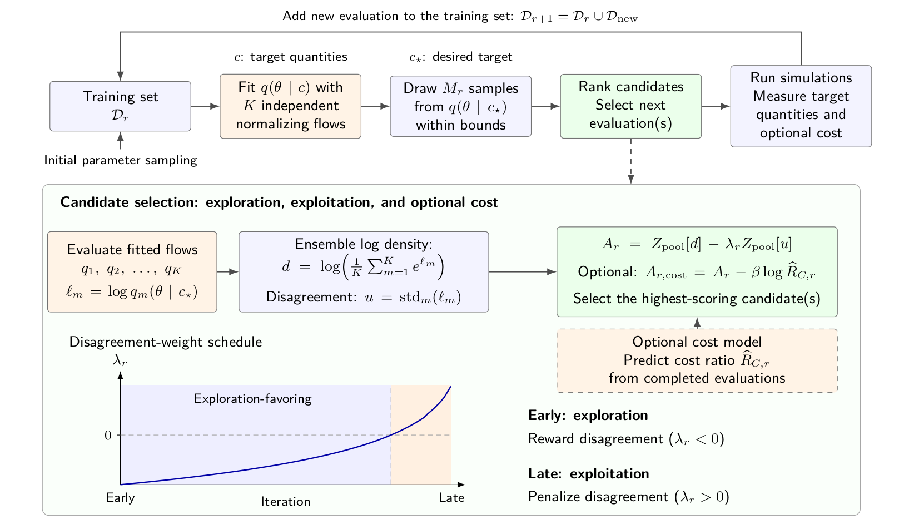

Fully Autonomous Calibration for Astrophysics
Which simulation should you run next? Specify the parameters you can vary, the outputs you want to match, and your simulation budget. The software learns from completed runs, chooses the next inputs, and tests its final recommendation with your simulator.
Calibrating galaxy formation with SAGE
We used the SAGE galaxy formation code to fit eight observed galaxy properties, allowing the baryon fraction to vary. We gave each property equal weight. The best simulation found during the adaptive search reduced the loss by 18.5% relative to the published manual calibration.
| SAGE model | Loss |
|---|---|
| Published manual calibration (Croton et al. 2016) | 0.128536 |
| Automated calibration, baryon fraction free | 0.104723 |
A lower loss means closer overall agreement. The calibrated model brought stellar mass density closer to observations, although it still predicted too few galaxies with little ongoing star formation.
Reproduce the SAGE result
Replay model selection using the archived simulation outputs. You can check the table above without running SAGE or installing a machine-learning library. In a Python 3.10+ environment with Git available, run:
python -m pip install 'git+https://github.com/YvonneWANGYY/calibration.git@v0.3.0'
autocalibration reproduce-sageIn the output, read L8 for the first model (the published manual calibration) and for Eight targets: equal weights (the automated search with the baryon fraction free). These are the two losses above, rounded to six decimal places.
How the paper scores SAGE
For each galaxy property, the study scales simulated and observed values using the observed range, then averages the squared differences across its bins. The eight-property loss is the mean of those eight scores. A property with more bins therefore receives the same weight as one with fewer bins.
Browse the released targets, evaluated models, and run configurations ↗
Have a calibration problem?
You supply a parameter range for each input, a target profile, a command that runs your simulator, and the number of adaptive rounds you can afford. Try the heat example first, then replace its inputs and outputs with yours.
What should my simulator match?
A target profile gives the desired value for each output you will compare. In the example, a heater warms one end of a rod. We can vary the heater temperature and the thermal diffusivity. The target is the temperature at three positions after 60 seconds, taken from a finer simulation.
| Distance from heater | Target | One trial |
|---|---|---|
| 1 cm | 65.66 °C | 58.90 °C |
| 3 cm | 41.68 °C | 30.26 °C |
| 5 cm | 27.69 °C | 21.35 °C |
This trial used an 80 °C heater and a diffusivity of 0.04 cm²/s. All three positions stayed too cool. Each new run changes the inputs and measures temperatures at the same positions and time.
Set up once for either starting point
Install the release with flow fitting and tuning enabled. Download the heat example (ZIP), extract it, and open a terminal in the folder containing simulate.py and the two problem files.
python -m pip install 'fully-autonomous-calibration[tuning] @ git+https://github.com/YvonneWANGYY/calibration.git@v0.3.0'Choose your starting point
I have completed simulations
Use existing-runs.json. Its initial_data field points to a CSV with one row per completed run. The rows can come from any design. The example reuses two runs, makes four adaptive calls, then evaluates one final recommendation.
autocalibration run existing-runs.json --output from-runsI need an initial design
Use new-design.json. Set initial_samples to the number of initial runs you can afford. The example generates eight Latin hypercube points across the parameter ranges, evaluates them, then makes the same four adaptive calls and one final call.
autocalibration run new-design.json --output from-designConnect your own simulator
- In either problem file, edit
parametersand their bounds. Undertarget, give each desired output a name and numeric value. Setadaptive_stepsto your round budget. Keepmethodset toneural_spline_flowto use the flow workflow. - Set
simulatorto your executable and its arguments. For each evaluation the software sends one JSON object on standard input. For the heat trial above it sends{"diffusivity_cm2_s": 0.04, "heater_c": 80}. - Have your command run the simulation, extract the outputs, and print one JSON object on standard output. The example returns roughly
{"temp_1cm": 58.90, "temp_3cm": 30.26, "temp_5cm": 21.35}. Match the target names, units, and sampling coordinates. Write diagnostics to standard error. - If importing runs, use these same parameter and output names as column headers. The example includes a working
initial.csv.
The local runner sums squared differences across outputs. Choose consistent scaling when your outputs have different units. The SAGE replay uses the paper’s observable-level loss described above.
Read the run results
Open summary.json in your output folder. best_observed is the lowest measured loss among all evaluated points, including imported runs. final_recommendation is the simulation evaluated after the last flow fit. Compare their losses and individual outputs to see where each matches the target.
evaluations.jsonl records each point and its outputs. flow_history.jsonl records the model settings and validation scores. Use a new output folder for each run.
How the pipeline chooses a simulation


- Learn from completed simulations. Each run pairs inputs with measured outputs. An ensemble of conditional neural spline flows learns which input combinations are plausible for a given output profile. Durkan et al. (2019).
- Choose the next run. Given the desired profile, the flows draw candidate inputs. The search ranks candidates by ensemble density and by how much the flows disagree. The simulator evaluates the selected inputs, and the measured outputs join the training set.
- Test the final recommendation. After the last adaptive round, the ensemble fits all completed simulations and estimates the peak of the calibration density in physical parameter coordinates. A separate simulation measures how closely that recommendation matches the target.
The paper applies this loop to Sedov–Taylor blast waves, angular-momentum conservation in a rotating cylinder, and galaxy formation with SAGE. For the selection equations and the optional simulation-cost penalty, see “Candidate Selection” and “Cost-Aware Candidate Selection” in Wang, Oh, Kim & Jo, Fully Autonomous Calibration for Astrophysics via Adaptive Parameter-Space Exploration (in preparation).
Which settings should I change?
- Simulation budget ·
adaptive_steps - Set how many new simulations to run after the initial data are ready. Reserve one additional simulator call for the final recommendation.
- Candidate pool ·
candidate_pool_size - Set how many parameter combinations to consider per round. The heat example ranks 256 and sends one to the simulator.
- Hyperparameter tuning ·
tuning.schedule - The paper tunes once on the initial simulations. Use
initialfor that schedule, orevery_iterationto repeat the search before each adaptive proposal. Both schedules refit the flow weights after new data arrive. Optuna, Akiba et al. (2019).
Flow settings, the disagreement weight λ, and optional cost
Model fitting. Under tuning, trials sets how many configurations Optuna tests and folds sets how many groups it uses for held-out validation. Provide at least as many initial simulations as folds. The search selects the settings with the lowest mean held-out negative log-likelihood. epochs controls training passes per fit and members the number of independently fitted flows. See the editable hyperparameter search space ↗.
Disagreement weight (λ). The released runner computes λ from the round number. Across multiple rounds it rises from −1 to +1. Early rounds reward disagreement so the search explores uncertain regions. Late rounds penalize disagreement so it favors high-density candidates the flows support consistently. A single adaptive round uses −1.
Cost weight (β). In the paper’s cost-aware hydrodynamic experiments, a positive β penalizes candidates with higher predicted computational cost. The v0.3.0 heat workflow ranks candidates using density and disagreement.